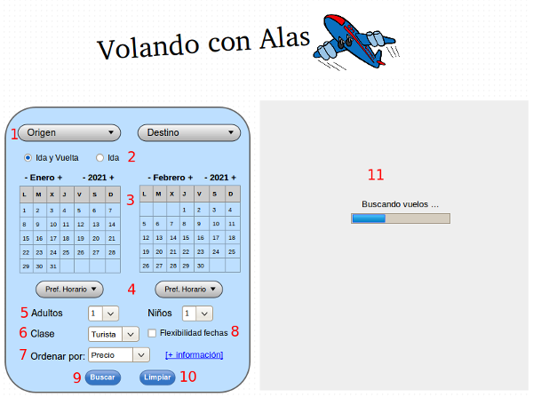

A continuación se muestra una captura de la pantalla del módulo de reservas, y la descripción de cada uno de sus elementos.

Pantalla de Reservas
Lista para la seleción de la ciudad de origen y destino
Tipo de viaje: Ida y vuelta / Sólo ida
Calendario para la selección de fechas de salida y regreso de los vuelos
Lista de selección de preferencia de horarios
Selección de número de pasajeros adultos y niños
Tipo de pasaje: Turista / Primera clase
Seleccionar como se quiere que se presenten los resultados ordenados
Opción para mostrar diferentes alternativas de fechas
Botón para iniciar la búsqueda de vuelos
Botón para limpiar el formulario de búsqueda
Zona donde se muestran los resultados de la búsqueda